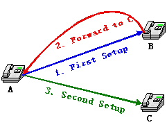
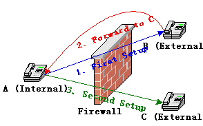
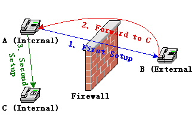
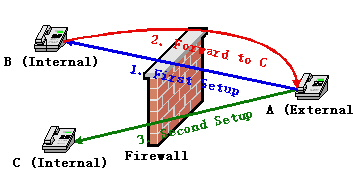
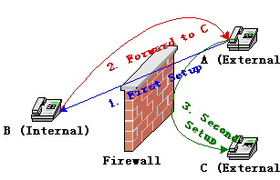
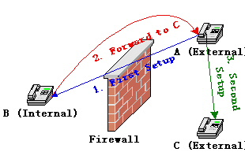

NATH323 is a Linux
kernel module that enables Linux firewall to support connection tracking and
network address translation (NAT) of H.323 protocol. This module supports RAS, Fast
Start, H.245 Tunnelling, Call Forwarding, RTP/RTCP and T.120 based data and
applications including audio, video, fax, chat, whiteboard, file transfer, etc.
NATH323 is now part
of the official Linux kernel 2.6.17-rc1 and 2.6.17-rc2.
The current stable
version is 1.0 for kernel 2.6.16.
2.1 Full Featured H.323 Decoding
Library
2.5 Support Audio, Video, Fax,
Chat, Whiteboard and File Transfer
2.6 Support Both Voice Gateways and
Terminals
2.7 Support Embedded Architectures
That Have No Support of Misaligned Memory Accesses
3.2 Apply Patch to Kernel Source
4.1 Internal Endpoint Call External
Endpoint
4.2 External Endpoint Call Internal
Endpoint
4.3 Internal Endpoint Call External
Endpoint Though Gatekeeper
4.4 External Endpoint Call Internal
Endpoint Though Gatekeeper
4.5 Internal Endpoint Call Another
Internal Endpoint Though Gatekeeper
5.1 Scenario 1: A is internal, B
and C are external
5.2 Scenario 2: A and C are
internal, B is external
5.3 Scenario 3: A is external, B
and C are internal
5.4 Scenario 4: A and C are
external, B is internal.
H.323 is a standard
VoIP signalling protocol from ITU-T. As one of the most important VoIP
protocols, it is widely used by voice gateways (like Cisco voice gateways),
hardware terminals (like IP phones), and software terminals (like Netmeeting,
Gnomemeeting and OpenPhone).
To make a call,
H.323 calling party and called party (and maybe involving a gatekeeper) need to
exchange a series of signals, and setup multiple TCP and UDP connections. The
signals are encoded in ASN.1 PER and BER. All of these make it much more
difficult for a firewall to track the connections and do network address
translation than other protocols.
There are some
existing alternative solutions, like "Shared IP" and STUN. Devices
with support of "Shared IP" let you configure an IP address (supposed
to be the external address of your firewall) that will be used as the reply
address in every outgoing signal, and these devices will try to connect H.245
channel and send RTP/RTCP packet first to make firewall to recognise these
connections. But there are some problems. First, you may not know your
firewall's external IP address or the address changes all the time (like a
dial-up network); second, if the external endpoint connect H.245 or send
RTP/RTCP first, the call will fail; third, these devices can't predict the
NATed TCP/UDP port, so the actual ports may be different from the specified
ports in signals, this may cause security issues; fourth, the mismatch of port
numbers also causes the devices can't register with a gatekeeper and receives
calls from outside.
STUN (Simple
Traversal of UDP through NATs) is a protocol for assisting devices behind
firewall to find out their external IP address. But it's not widely supported
by H.323 devices, and it needs extra non-H.323-standard equipments (STUN
servers).
Enabling firewalls
to understand H.323 is the final solution. For Linux, as far as I know, Jozsef
Kadlecsik wrote a H.323 connection tracking and NAT module for Netfilter and
Max Kellermann wrote another one based on it. Jozsef's module uses "brute
force" to look for addresses in signals by caller and callee's addresses.
This method is mainly for Netmeeting.
Max Kellermann's
module uses a separate ASN.1 decoding library. This is a great progress. But
it's still not enough. We need support for RAS, Fast Start and H.245 Tunnelling
(these are almost mandatory requirements for modern H.323 devices).
It seems we need yet
another kernel module, so I wrote this one.
This patch (or
module, actually) comes with an H.323 decoding library that is based on H.225
version 4, H.235 version 2 and H.245 version 7. It is extremely optimized for
Linux kernel and decodes only the absolutely necessary objects in a signal. It
has following features:
With support of RAS,
a NATed gateway or terminal can register with a H.323 gatekeeper and make calls
to and receive calls from a H.323 zone. The benefit is you can register
multiple endpoints from behind one firewall and all of them can receive calls
from outside. You don't need to configure iptables with boring DNAT rules for
each of them!
The limitation is
the gatekeeper must be outside of the Linux firewall.
Gnomemeeting
registers 127.0.0.1 as one of its call signal addresses to gatekeeper. This
only makes sense when the calling party, called party and gatekeeper are in the
same host. But this oddity can easily confuse a gatekeeper. NATH323 has special
code to fix this. If you are registering an external Gnomemeeting, you better
shut down its “lo” interface.
Fast-Start means
embedding H.245 OpenLogicalChannel signals in Q.931 signals. This makes a call
setup faster, but also makes the Q.931 signals bigger, especially Setup
signals. If there are too many Fast-Start entries, a Setup signal may become
too big and the TPKT will be fragmented, finally the decoding library will get
a partial signal. So if you get errors like "decoding error" or
"incomplete TPKT" in your kernel log, you are running into this
situation. I still have no idea how to handle this in a Netfilter module.
Anybody can help? Based on my experience, I suggest you not use more than 20
Fast-Start entries, if you disable Early H.245, you may use up to 30 entries.
20 Fast-Start entries means totally 10 audio, video and fax codecs, this
practically is enough for most of hardware devices, but not enough for some
software terminals. Gnomemeeting and OpenPhone support more than 20 audio
codecs, you may have to disable some of them before use.
H.245 Tunnelling
saves a TCP connection of H.245 and makes call setup faster.
Actually, it
supports any RTP/RTCP and T.120 based data or applications.
The main difference
between them is a gateway supports multiple calls and a terminal only supports
one at a time.
This is necessary if
you are using embedded system like some ARM.
This installation
guide is just a simple guide. I assume you will start with a clean kernel
source code tree. If you have a modified or patched source, you are on your
own.
You can download
NATH323 patch from here.
The Linux kernel home page is here.
Remember to download the file of correct version. If the patch name is
patch-2.6.16-nath323-1.0.bz2, you should download linux-2.6.16.tar.bz2. Let's
assume you will save them to your home directory.
First, you will
decompress the kernel source, like this:
tar xjvf linux-2.6.16.tar.bz2
A new directory
linux-2.6.16 will be created under your home directory. The clean kernel source
code is in it.
Then, apply the
patch:
cd linux-2.6.16
bunzip2 -cd ../patch-2.6.16-nath323-1.0.bz2 | patch
-p1
Before you compile
kernel, you have to configure it to enable the new H.323 module. There are
several ways to do it. You can get a menu-driven interface by using command:
make menuconfig
or
make xconfig
or
make gconfig
Remember the
location of H.323 module in the menu:
-> Networking
-> Networking support
-> Networking options
-> Network packet filtering
-> IP: Netfilter Configuration
-> Connection tracking
-> H.323 protocol support
If you want to use
an existing .config file, you will use this command:
make oldconfig
You can get more
detailed information from linux-2.6.16/README. I assume you will configure the
H.323 module as module (not built-in).
This is the simplest
step and it takes the longest time. Just one command:
make
Install modules
first.
make modules_install
Then the kernel.
make install
Based on your
configuration, you may need build an initrd image, refer your Linux
distributor's manual for details. After that, you need to check the
configuration of Lilo or Grub, make sure you can boot with the new kernel and
the old kernel.
Now you can reboot
with your new kernel.
I assume you compile
it as module, not built-in, otherwise, skip this step.
Now you are under
the new kernel. You will need load the new H.323 module before test it.
modprobe ip_conntrack_h323 gkrouted_only=0
modprobe ip_nat_h323
If you want only
connection tracking, you can load only ip_conntrack_h323.
The parameter
“gkrouted_only” is for NAT of RAS. If you set it to 0, when an internal
endpoint registers with an external gatekeeper, calls from any external
endpoints to this endpoint will be forwarded by Linux firewall. If you don't
think this is safe and your gatekeeper supports proxy function (like GNUGK),
you can set gkrouted_only to 1 (This actually is the default value), then only
calls from the gatekeeper will be forwarded to the registered endpoint.
Another parameter
for ip_conntrack_h323 is “default_rrq_ttl”. This is used to specify a default
timeToLive (in seconds) for registering an endpoint that doesn't send
keep-alive RRQ and there is no timeToLive in RRQ and RCF. In this situation,
normally the RAS connection and call signal expectation will expire quickly
(UDP connection expire in 180 seconds by default). This may
not be what people want when they register endpoints for receiving calls. By
setting this parameter to a longer time, such endpoints like Netmeeting can
register once and stay alive for a longer time to receive calls from outside of
firewall. The default value is 300 (seconds).
iptables's NAT
function should be enabled unless you just want to do connection tracking.
First, enable Linux
to forward IP packets. If it's already enabled, skip this.
echo "1" >
/proc/sys/net/ipv4/ip_forward
Then configure
masquerading. I assume eth0 is the external interface of your Linux firewall.
The command will be:
iptables -t nat -A POSTROUTING -o eth0 -j MASQUERADE
OK, that's it. Now
you can run your whatever VoIP devices.
These are the
supported calling models.
Internal Endpoint --->
Linux Firewall ---> External Endpoint
The internal
endpoint and the external endpoint are not registered with a gatekeeper, the
internal endpoint calls the external endpoint by calling its IP address
directly.
Internal Endpoint <---
Linux Firewall <--- External Endpoint
The internal
endpoint and the external endpoint are not registered with a gatekeeper, the
external endpoint calls the internal endpoint by calling the firewall's
external IP address.
In this model, you
need an extra iptables DNAT rule to forward incoming Setup signals to the
internal endpoint. I assume eth0 is the external interface of your Linux
firewall and the internal endpoint's IP address is 192.168.0.2. Then the
command will be:
iptables -t nat -A PREROUTING -i eth0 -p tcp --dport 1720 -j DNAT --to-destination 192.168.0.2
+---------> Gatekeeper <--------+
| |
Internal Endpoint --->
Linux Firewall ---> External Endpoint
The internal
endpoint and the external endpoint are registered with a gatekeeper outside of
the firewall. The internal endpoint calls the external endpoint by calling its
email address, user name or even a phone number.
+--------> Gatekeeper <---------+
| |
Internal Endpoint <---
Linux Firewall <--- External Endpoint
The internal
endpoint and the external endpoint are registered with a gatekeeper outside of
the firewall. The external endpoint calls the internal endpoint by calling its
email address, user name or even a phone number.
You don't need to
configure a DNAT rule for iptables. When the internal endpoint registers with
the gatekeeper, the firewall will do it for you.
+----------------------> Gatekeeper
<-----------------------+
| |
Internal Endpoint A
---> Linux Firewall A ---> Linux Firewall B ---> Internal Endpoint B
The internal
endpoint A and the internal endpoint B are registered with a gatekeeper outside
of their firewalls. They call each other by calling the peer's email address,
user name or even a phone number.
Again, no special
DNAT rules needed.
Call Forwarding is
used for call redirection. When endpoint A calls endpoint B, B tells A a
preconfigured IP address or alias of endpoint C, then A disconnects with B and
calls C.

Special support may
be needed when there is a firewall between A and B. Firewall must understand
the forwarding address and track the implicit second call. If the forwarding
address is an alias, NATH323 doesn’t need and can’t do anything – there will be
a complete call procedure and NATH323 is already able to handle that. Special
support is only needed when B gives A an IP address.
There are four
scenarios when firewall is involved in call forwarding.

In this scenario, all
traffic needs to traverse firewall. NATH323 will handle everything; you just
need the SNAT configuration.

In this scenario,
because NATH323 has no way to know A and C are in the same side and can talk
directly, it setup a useless connection expect between A and C, although the
expected traffic will never come to it. The expect will expire and be released
in 240 seconds. So, basically there’s no big deal, just a little bit of memory.
But you can avoid this by configuring parameter “internal_net”.

In this scenario,
all traffic needs to traverse firewall. NATH323 will handle everything; you
just need the DNAT configuration. If B is registered with a gatekeeper, you
just need the SNAT configuration. C may or may not be registered with
gatekeeper.

In this scenario,
because NATH323 has no way to know A and C are in the same side and can talk
directly, it NATs C’s IP address to its external IP address. Then all the
traffic between A and C will be relayed by firewall. Firewall acts like a H.323
proxy. This relaying causes extra delay, but may be useful for some usages. For
example, you may want to hide C from A. Similarly you can avoid this by
configuring parameter “internal_net”.

To avoid unnecessary
expect in scenario 2 and unnecessary relaying in scenario 4, you can help
NATH323 to distinguish internal and external endpoints by specifying your
internal network and mask. This parameter is string type. The format is
network/mask. For example, if your internal network is 192.168.0.0/255.255.255.0,
you can load ip_conntrack_h323 module like this:
modprobe
ip_conntrack_h323 internal_net=192.168.0.0/255.255.255.0
If you don’t
configure this parameter, NATH323 still works fine; but you will get
unnecessary expect in scenario 2 and unnecessary relaying in scenario 4.
So far, the tested
software includes Netmeeting, OpenPhone, Gnomemeeting, OpenGK and GNUGk.
Reports of compatibility testing for other products are greatly appreciated.
If you find a bug,
put it here. If
you have any questions, go to the forum. Please feel
free to send any opinions to me, zhaojingmin at users.sourceforge.net (replace
the "at" with "@").